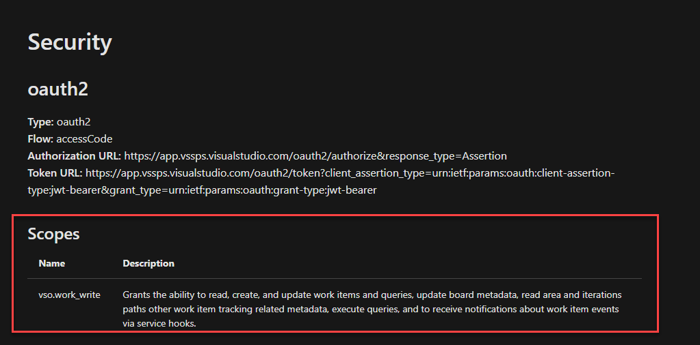
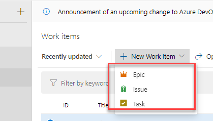
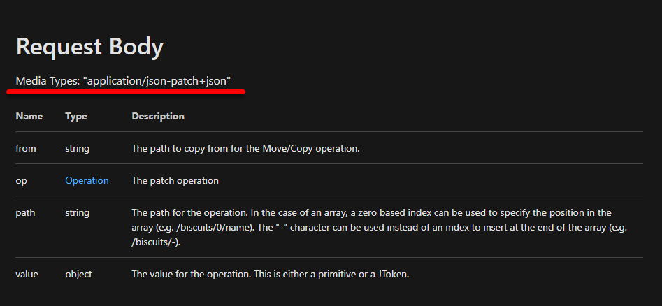

當網路速度慢遇上要大量開 Work Items 時，就會有一種想下班的念頭，還好 Azure DevOps 有提供 API 可以讓我們用程式來建立 Work Items，雖然剛開始有點小麻煩，但弄通後就還好，所以這邊就筆記一下起手式
OAuth
當呼叫 API 時，還是得通過驗證才能操作 API，這邊可以簡單的透過建立 Personal access tokens 的方式來完成權限控管及驗證等功能，至於如何在 Azure DevOps 建立 PAT，我相信網路上已經有很多文章在講怎麼操作了
每一個操作的 API 也有說明所需的權限，範例 
API 操作
這邊我使用 Angular 作為範例程式 ，先用一個 API 的操作來說明
取得 iterations
根據 API 文件得知，呼叫 https://dev.azure.com/{organization}/{project}/{team}/_apis/work/teamsettings/iterations?api-version=6.0 可以取得開 project 下的 iterations 資訊，
程式碼的部分如下(以下的程式碼會產生錯誤)
1 | baseUrl = '`https://dev.azure.com/{organization}/{project}'; |
organization和project請配合自己的 DevOps 專案修改- 這段程式碼當在呼叫 API 時會出現錯誤，原因是沒有授權的關係
來調整一下呼叫的 header 資訊，加入之前所建立的 PAT
1 | getIterations() { |
- Headers 的部分加入
Authorization的內容 - PAT 需要轉換成 Base64 的格式
PAT:${token}的PAT:是必要的- 重新執行即可取回所要的資訊
每次呼叫 API 時後面都要加上 api-version 資訊，其實有點麻煩，這資訊可以改放到 headers 內
1 | new HttpHeaders({ |
建立 Work Item
POST https://dev.azure.com/{organization}/{project}/_apis/wit/workitems/${type}?api-version=6.0
第一次看到 ${type} 的時候，我也搞不懂要放入什麼，經過一陣亂測試，終於知道要放什麼東西了 ，在網頁上面要新增一個 Work Item 時，可以選得類別會依開發模式來決定，基本操作都是一樣的

如果要建立一個 Task，網址會是
https://dev.azure.com/{organization}/{project}/_apis/wit/workitems/$Task
如果是 Issue，網址則會是
https://dev.azure.com/{organization}/{project}/_apis/wit/workitems/$Issue
這樣子說明應該可以瞭解 ${type} 要怎麼改了
另外一個要注意的地方是 Request Body 的 Content-Type 需要設定為 application/json-patch+json

1 | new HttpHeaders({ |
範例程式
1 | createWorkItem() { |
- 可以修改的 path ，可參閱 API - work item fields，但不是所有的欄位都可以設定，這部分就請各位自己測試了
Update Work Item
PATCH https://dev.azure.com/{organization}/_apis/wit/workitems/{id}?api-version=6.0
用一個 Related Work 的範例來說明更新 Work Item
1 | addLink(parent, ...childrend) { |
在 API 文件中有提供更多範例可以參考